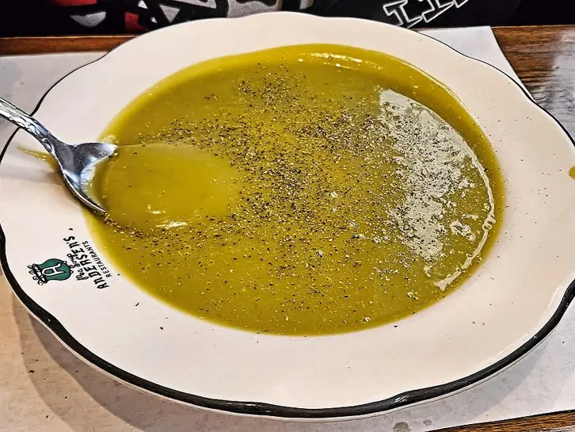

Фото: Eric Polk, CC BY-SA 4.0

Гороховый суп постный
Густой суп из колотого гороха на воде без мяса
90 мин6 порц.228 ккал на порциюБ 10 · Ж 6 · У 33Русская кухня
Продукты на 6 порц.
- Горох колотый1,25 стак.
- Вода2,5 л
- Картофель3 шт
- Морковь1 шт
- Лук репчатый1 шт
- Растительное масло2 ст. л.
- Лавровый лист2 шт
- Соль2 ч. л.
- Перец чёрный молотый1 щеп.
- Чеснок по желанию1 зуб.
- Укроп по желаниюпо вкусу
Как готовить
- Промойте горох до прозрачной воды и замочите в холодной воде на 2-3 часа или на ночь. Воду слейте.
- Залейте горох свежей водой, доведите до кипения на сильном огне, снимите пену.
- Варите на слабом огне 40-50 минут, пока горох не начнёт развариваться.
- Добавьте картофель кубиками, натёртую морковь и мелко нарезанный лук, варите 15-20 минут.
- Посолите, добавьте масло, лавровый лист и перец, варите ещё 5 минут.
- Помешайте ложкой: горох должен превратиться в пюре. Выключите огонь, добавьте чеснок и укроп.
Совет. Солите только в конце: в солёной воде горох долго не разваривается. Время замачивания в рецепт не входит.